| # | GIF | Animación | Frames | Tamaño | Activos | Confianza | Por qué |
|---|---|---|---|---|---|---|---|
| 00 | 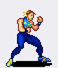 |
Retrato + guardia (idle) | 17 | 57×26 hasta 143×64 |
— | media | el frame 1 es un retrato, no un frame de animacion |
| 01 | 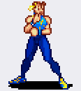 |
Paso lateral / desplazamiento | 7 | 55×31 hasta 63×46 |
#2 | baja | rodilla arriba y cuerpo girando; acaba en guardia |
| 02 | 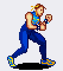 |
Caminar | 12 | 56×35 hasta 58×41 |
— | media | ciclo suave, piernas alternando, misma linea de pies |
| 03 | 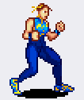 |
Caminar (ciclo espejo) | 12 | 59×34 hasta 61×41 |
— | baja | mismo patron que la banda 2 |
| 04 | 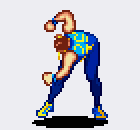 |
Patada alta | 7 | 57×33 hasta 63×58 |
#3 | alta | la pierna sube por encima de la cadera y vuelve |
| 05 | 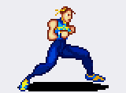 |
Punetazo | 6 | 53×46 hasta 57×68 |
#3 | alta | el puno sale al frente y se recoge |
| 06 | Punetazo largo | 6 | 57×46 hasta 65×63 |
#2, #4 | alta | brazo totalmente extendido, dos salidas | |
| 07 | 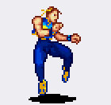 |
Patada media | 5 | 61×32 hasta 64×58 |
#3 | alta | rodilla, extension y recogida |
| 08 | Patada giratoria | 7 | 45×29 hasta 76×46 |
#5, #7 | alta | el cuerpo gira y la pierna barre | |
| 09 | 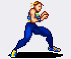 |
Bloqueo | 3 | 54×54 hasta 56×58 |
— | media | 3 frames, brazo cruzado delante |
| 10 | 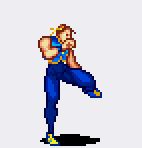 |
Patada con energia | 9 | 61×32 hasta 72×59 |
#3, #8 | media | efecto amarillo/azul en el pie |
| 11 | 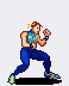 |
Agacharse y levantarse | 10 | 36×20 hasta 70×46 |
— | media | altura baja a la mitad |
| 12 | 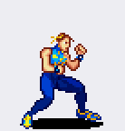 |
Salto mortal | 11 | 32×20 hasta 70×57 |
— | alta | el cuerpo se pone del reves |
| 13 | Salto y caida | 13 | 32×20 hasta 70×57 |
— | media | vuelta en el aire y aterrizaje | |
| 14 | Salto en cuclillas | 11 | 38×20 hasta 70×46 |
— | media | todo el ciclo por debajo de la altura de pie | |
| 15 | Salto vertical | 10 | 53×20 hasta 70×46 |
— | alta | los pies se separan del suelo y vuelven | |
| 16 | 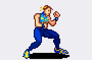 |
Agachada y golpe bajo | 12 | 46×46 hasta 57×78 |
— | media | incluye un puno extendido |
| 17 | Patada desde agachada | 6 | 43×37 hasta 47×68 |
#3 | media | sale bajo y la pierna se extiende | |
| 18 | 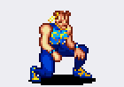 |
Barrido bajo | 5 | 32×34 hasta 47×58 |
#2 | alta | estela horizontal en el suelo |
| 19 | 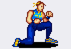 |
Golpe desde agachada | 6 | 45×46 hasta 47×59 |
#3 | media | marca de golpe en el frame 3 |
| 20 | 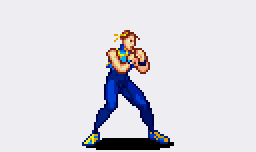 |
Especial: energia azul | 8 | 60×46 hasta 74×116 |
#8 | alta | el remolino azul crece frame a frame |
| 21 | 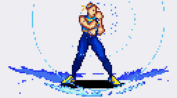 |
Final del especial | 6 | 57×48 hasta 69×116 |
— | alta | sigue el remolino y se apaga |
| 22 | Derribo y levantarse | 11 | 24×34 hasta 63×66 |
— | alta | cae de espaldas, queda en el suelo y se levanta |
Frame data que sale de la hoja
Con el alcance medido se puede separar el golpe en sus tres tramos: arranque (frames antes de que el miembro esté extendido), activo (frames con el miembro extendido, los que golpean) y recuperación (frames hasta volver a la guardia). A 12 fps.
| Animación | Frames | Arranque | Activo | Recuperación | Total | Extiende |
|---|---|---|---|---|---|---|
| Paso lateral / desplazamiento | 7 | 1 | 1 | 5 | 7 f · 583 ms | brazo |
| Patada alta | 7 | 2 | 1 | 4 | 7 f · 583 ms | brazo |
| Punetazo | 6 | 2 | 1 | 3 | 6 f · 500 ms | brazo |
| Punetazo largo | 6 | 1 | 2 | 3 | 6 f · 500 ms | brazo |
| Patada media | 5 | 2 | 1 | 2 | 5 f · 417 ms | brazo |
| Patada giratoria | 7 | 4 | 2 | 1 | 7 f · 583 ms | pierna |
| Patada con energia | 9 | 2 | 2 | 5 | 9 f · 750 ms | brazo |
| Patada desde agachada | 6 | 2 | 1 | 3 | 6 f · 500 ms | brazo |
| Barrido bajo | 5 | 1 | 1 | 3 | 5 f · 417 ms | brazo |
| Golpe desde agachada | 6 | 2 | 1 | 3 | 6 f · 500 ms | brazo |
| Especial: energia azul | 8 | 7 | 1 | 0 | 8 f · 667 ms | brazo |
Aviso: esto es lo que se puede deducir del dibujo. Los frames activos reales los decide el juego, no el sprite; y un golpe puede tener 1 frame activo aunque el miembro se vea extendido en dos. La hoja tampoco dice a qué velocidad va: 12 fps es la velocidad de revisión del GIF, nada más.
Cómo está cortado
- Fondo: se toma el color de la esquina (144,200,232) y se vuelve transparente con tolerancia 24. Nada de reescalar.
- Filas: franjas de píxeles totalmente fondo marcan el corte. Salen 23.
- Figuras: componentes conexas; un trozo pequeño (sombra, mechón, efecto) se pega a su figura si está a menos de 8 px.
- Falla: si una fila llevara dos animaciones seguidas, saldrían juntas. En esta hoja no he visto ninguna, salvo la fila 0, que empieza con el retrato.
Los frames sueltos están en voltia/nuevo/chunli/banda_NN/, con
el fondo ya transparente y a tamaño nativo.